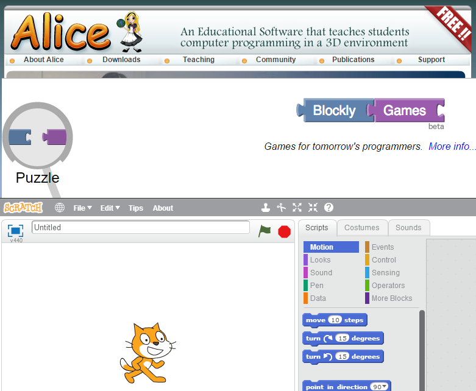
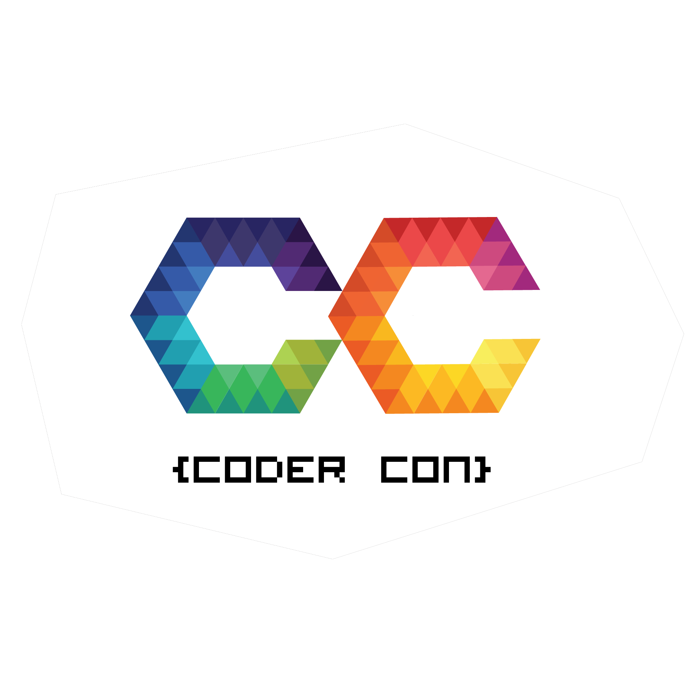

It’s every parent’s biggest headache. Kids clicking away at their keyboards and mouses as their grades in school slip is becoming an increasing scene in a lot of households.
This is definitely a worrisome situation for any parent who wants the best for their kids. But what if I told you this may be a sign that they can be a coder? Most coders credit their gaming experience for their logic and problem solving skills.
Now, more than ever, we need coders to make sense of all of the information and needs of the world. With these five activities, you may just be able to turn your gamer into a coder!
Code.org is a non-profit organization dedicated to expanding access to computer science, and increasing participation by women and underrepresented students of color. To promote coding, they made this video to inspire students of all ages and backgrounds to not fear coding and see just what it can do!
For most gamers they’re already coders, they just don’t know it. Doing free online activities is a great way for people to get an introduction to programming without the intimidation of raw code!
Companies such as Google and Microsoft as well as institutions such as MIT and Carnegie Mellon have developed beginner (gamer) friendly coding platforms. Scratch, Alice, and Blockly make coding seem less intimidating for anybody who want to get started with programming.
Unfortunately these platforms don’t come with fun challenges that click with gamers. Only coding classes on these platforms can provide cool challenges. Fortunately, Code.org has create free 20 hour courses that use popular games such as Flappy Birds to make coding more fun and relevant.
Sometimes the best way to convince gamer to code is by interacting with other gamers who are also coders. While it may sound like a daunting task to find these people, most of the instructors at Coder Central are actually also gamers!
If you go to Coder Central’s register page (don’t worry you don’t have to register right away!) to schedule an online meeting with us to learn about our technical experience and how we have been able to take the best of both worlds of gaming and coding.
Most gamers game because of the community, and in fact, a lot of that community overlaps with the coding community! If you really want to convert your gamer into a coder, hackthons are the events to go to.
Now, don’t freak out just because the word has “hack” in it. In this context, “hacking” actually means to create something with a group of people! Hackathons are events where coders, designers, and artists get together to create something innovative within a certain period of time - usually within 24 or 36 hours.
Some hackathons require no previous knowledge of coding to attend, because they provide workshops that help people get started in coding. Some of these include High School Hacks, Code Day, and Angel Hacks.
And of course, if you want something a bit more local, Coder Central actually runs its own Coder Con that provide both cool introductory workshops and speaker series to inspire students to code!
There is a lot more to know about hackathons, but at the end of the day, hackathons are great way to convert a gamer into a coder because they create an inspiring environment that makes people want to create something. It is a great way for gamers to meet people with similar interests as them which inspires them to do more with their time than just playing games.
While I’m not advocate of forcing students to learn something for the sake of learning it, I am a big advocate of forcing students to step outside of their comfort zone to make them better people. This is why I highly suggest signing up your gamer to be take a live coding class because 1) it combines all of the previous activities we just mentioned, and 2) it’s a safe place for students to discover why they are passionate about games!
Some of the most popular coding classes/camps around the Bay Area include iD Tech and Tech Know How Kids. For more local options around the Tri-Valley Area there are the Gatehouse Academy for Gifted Education and Coder Central.
Just to elaborate a bit, while designing the courses for Coder Central, my team and I really focus on making the learning process as organic as possible. What does this mean? For us it meant creating an environment where students (and especially gamers) want to learn to code.
We specifically hire our teachers to be close in age range with our students. And unlike regular school, we celebrate failure because we see it as part of the natural learning and innovation process! You can learn more about our classes here.